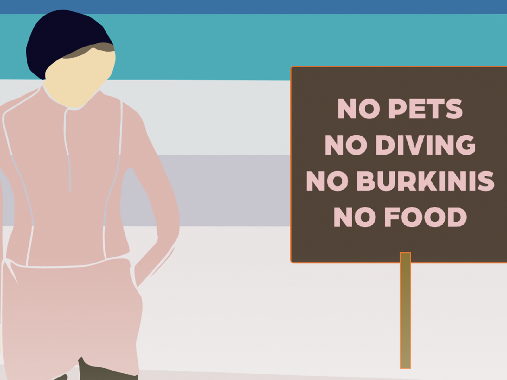
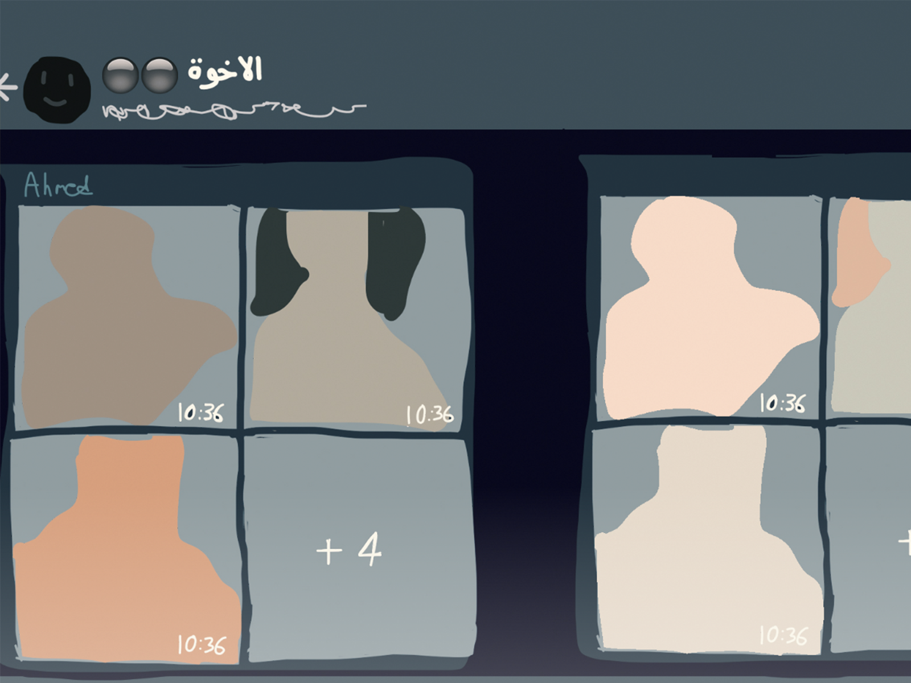
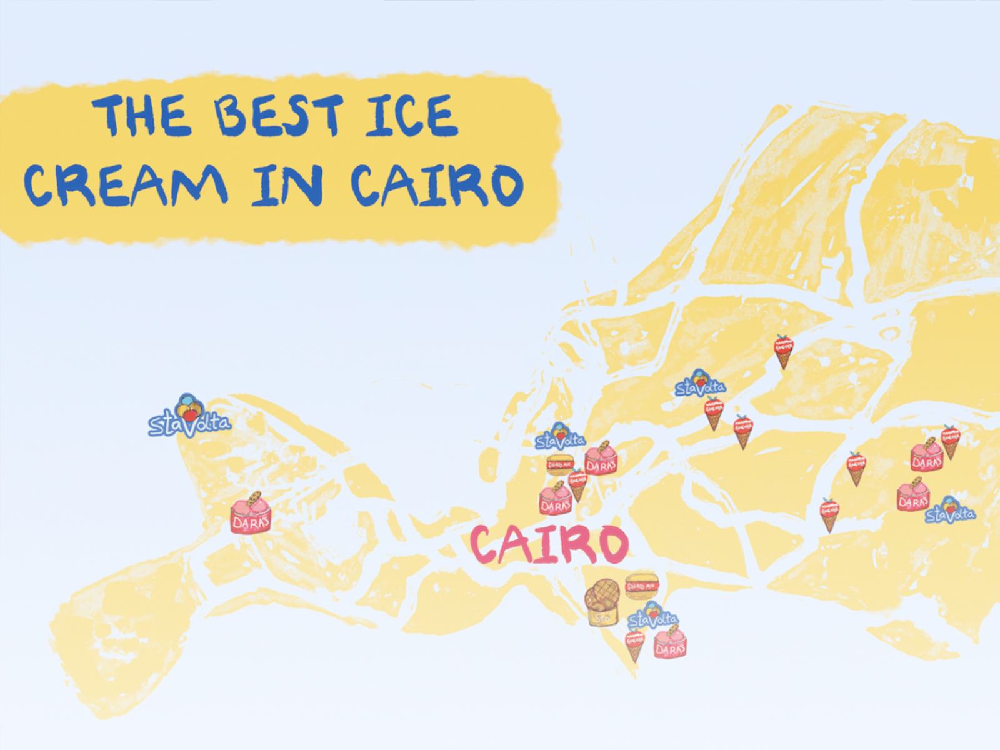
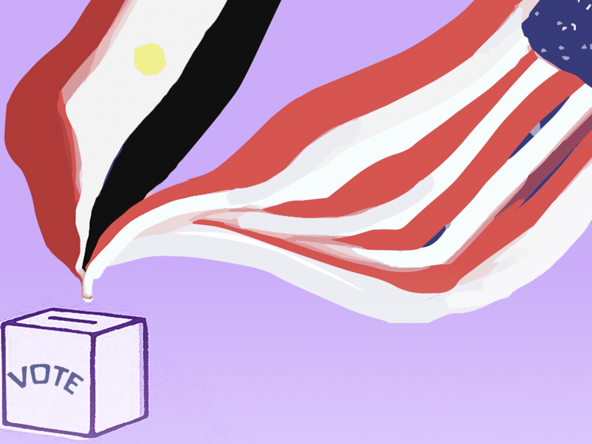
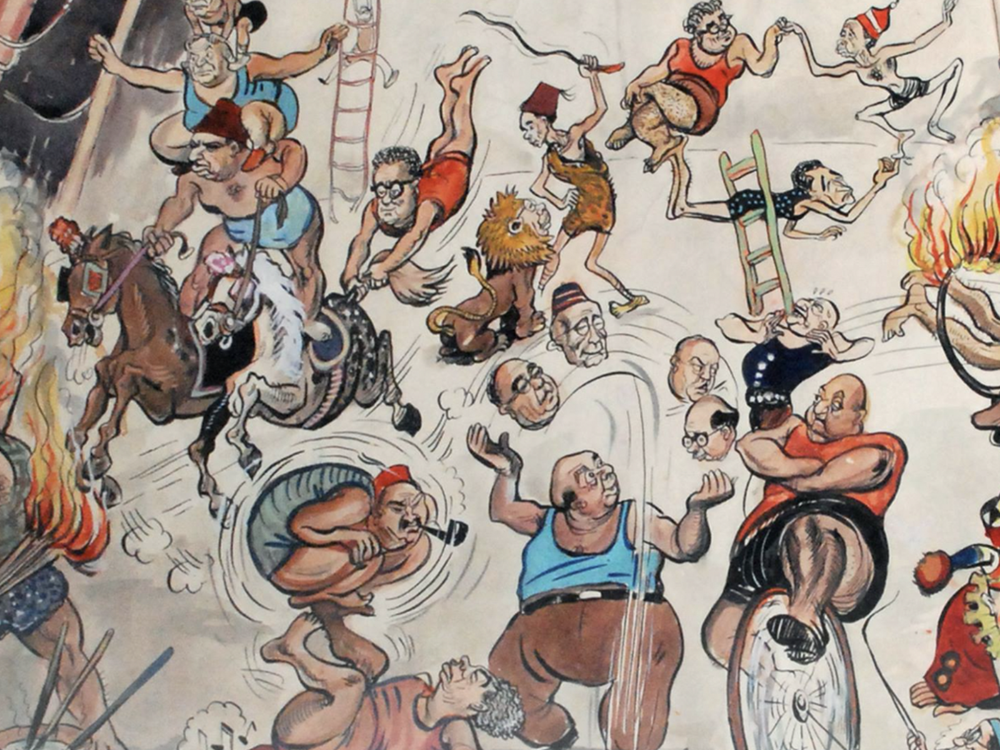
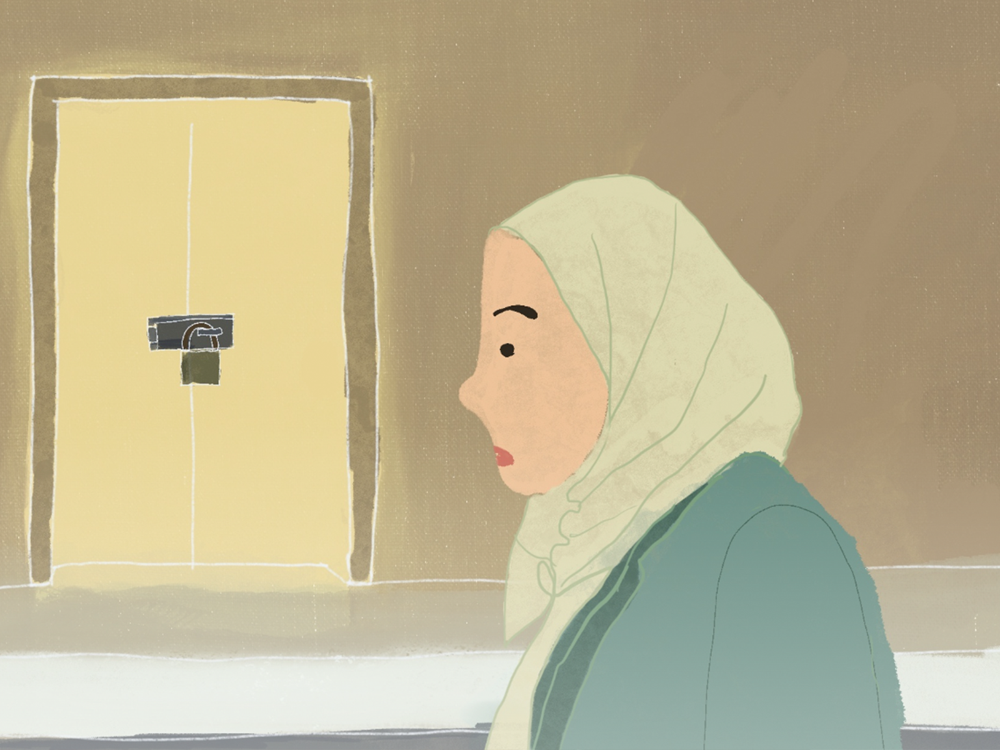
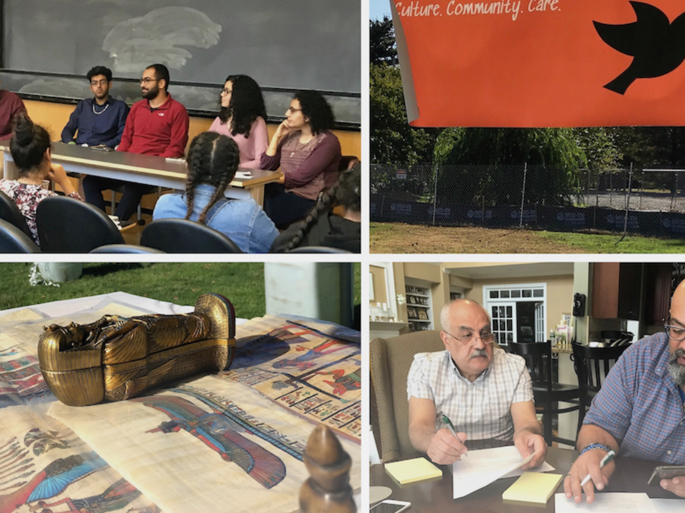
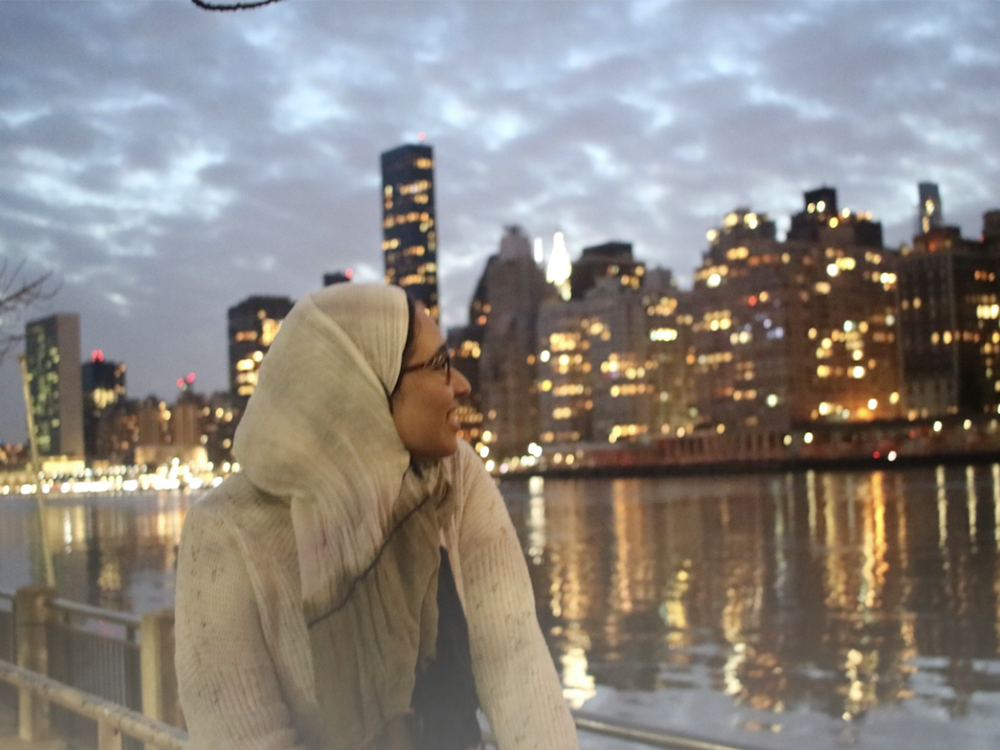
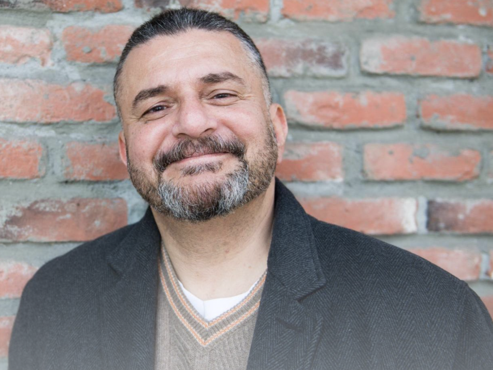

Reporting for Egyptian Streets
A selected archive of reporting, essays, interviews, and cultural criticism published during my year at Egyptian Streets, where I wrote more than 100 articles across culture, politics, identity, food, entertainment, and opinion.

September 7, 2020
AUC Graduate Exposes Student Revenge Porn Group

October 14, 2020
Mapping Desserts: the Cairo Republic of Ice Cream



January 31, 2021
Hijabis Demand Justice in the Egyptian Workplace


May 31, 2021
From Cairo with Love: My Fabricated Coming of Age
